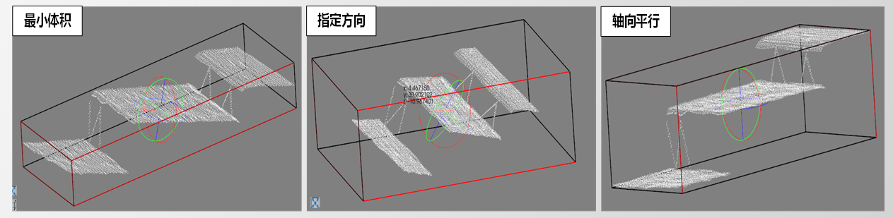

点云包围盒工具用于生成点云的外接长方体。
主要服务于3D点云测量项目，工具包含获取最小体积包围框、主方向最小包围框、轴向平行包围框三种功能，用于3D测量项目预处理/后处理阶段。

无
工具执行流程：加载点云→设置包围类型→执行。
| 参数名称 | 参数说明 |
|---|---|
| 包围盒类型 | 轴向平行：效率较高；体积最小：物体最小包围盒；指定方向：控制包围盒的方向； |
| 开启并行运算 | 是否开启并行运算，选择是时，算法将开启OpenMp并行计算方式，可以提升计算速度，但可能出现耗时不稳定的情况，选择否时，算法将关闭OpenMp并行计算。 |
| 线程数百分比 | 设置并行运算的线程数百分比，有效范围为 (0, 0.75]，对应表示(0%, 75%]百分比范围。 |
| 参数名称 | 参数说明 |
|---|---|
| 输出包围盒 | 得到的包围盒结果，类型为scVoxelCuboid，包含（中心点坐标、法向量长宽高、包围盒长宽高）， |
| 执行结果 | 工具执行正确性 |
| 执行时间 | 工具执行所需时间 |
参见“\Samples\3D\点云\点云包围盒工具.gvp”。